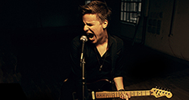

Farkas-Jenser Balázs és zenekara
Hivatalos honlap
Hivatalos honlap
Kisgyeremekkorától fogva, 3 éves kora óta zenél, énekel. Az Égből Pottyant meséktől kezdve a zeneiskolai tanulmányokon ( zongora, klarinét ) és a Kőbányai Zenei Stúdió tantermein át megjárt sokmindent, amit tanintézménynek lehet hívni.
2007-ben korengedménnyel felvételt nyert a Kőbányai Zenei Stúdió ének szakára. Közben magántanulóként befejezte a gimnáziumot, és miután 2010-ben Kőbányán is végzett, az angoltanítás és a szinkrontolmácsolás volt a két fő foglalkozása. Gitározni 16 évesen kezdett, először autodidakta módon, majd oktatóknál folytatta hangszeres tanulmányait ( Palatin Eduárd, Lakatos Elek ). Kedvenc időtöltései közé tartozik a wakeboardozás, a síelés, a motorozás és a hangszerek bütykölése. Gitározni imád, aludni nem annyira. Kedvenc étele ( jelenleg ) a grillezett gomolya salátával. Nem eszik húst. Javíthatatlan optimista.
A zenekar gitárosa közel 6 éve dolgozik együtt Gassama Györggyel, majd miután 2011-ben a csapat elnyerte végleges tagösszetételét, nagy lendülettel vettette bele magát a közös dalszerzésbe és próbázásba.
Kedvenc műfajai közé tartozik a Country Rock, de a Heavy Metaltól sem álmodik rosszakat. Kedvenc együttesei a Beatles és a Jon Bon Jovi. Imádja Amerikát. Bármit is csináljon, csak szívvel-lélekkel csinálja, vagy inkább sehogy.
1990. február 9-én látta meg a napvilágot. Nyolc éves volt, mikor szülei beíratták zongora-tanárhoz, de hamar kiderült, hogy a zongora nem az ő hangszere. :)
Tíz éves korától kezdett igazán a dobolással foglalkozni. Előbb autodidaktaként, később tanároktól tanult ( Sramkó János, Németh Gábor, Solti János). Első zenekara egy Jurassic Punk néven futó punk zenekar volt. Később, pár évre rá, egy zenekarba került Rúzsa Magdival. Azóta megszakitás nélkül zenélt kisebb-nagyobb zenekarokban. 2008-ban felvételt nyert a Kőbányai Zenei Stúdióba. Ott ismerkedett meg Balázzsal, aki egy évvel később felkérte, hogy Rackával és Ervinnel közös zenekarukban doboljon. Azóta húzzák közösen az igát.:)
Bamako-ban született, ellenben 3 éves korától Magyarországon élt és tanult.
A zenélés dobos ikertestvére miatt kezdte el foglalkoztatni középiskolai tanulmányai alatt. Technikai, illetve zeneelméleti alapjait oktatóknál sajátította el ( Kepes Róbert, Temesi Berci, Megyaszai István), akikkel az évek során személyes barátságot is kötött. Többféle formációban megfordult, amelyek zenei irányzatai a rock illetve a jazz-funk körül mozogtak. Krenyiczky Ervinnel hosszú évek óta együtt dolgozik, aki a basszusgitározásában, illetve annak zenében betöltött funkciójában nagy hatással volt rá. Hobbija a pályamotorozás. Érdekli a filozófia, a design, illetve a zene mint kommunikációs forma.